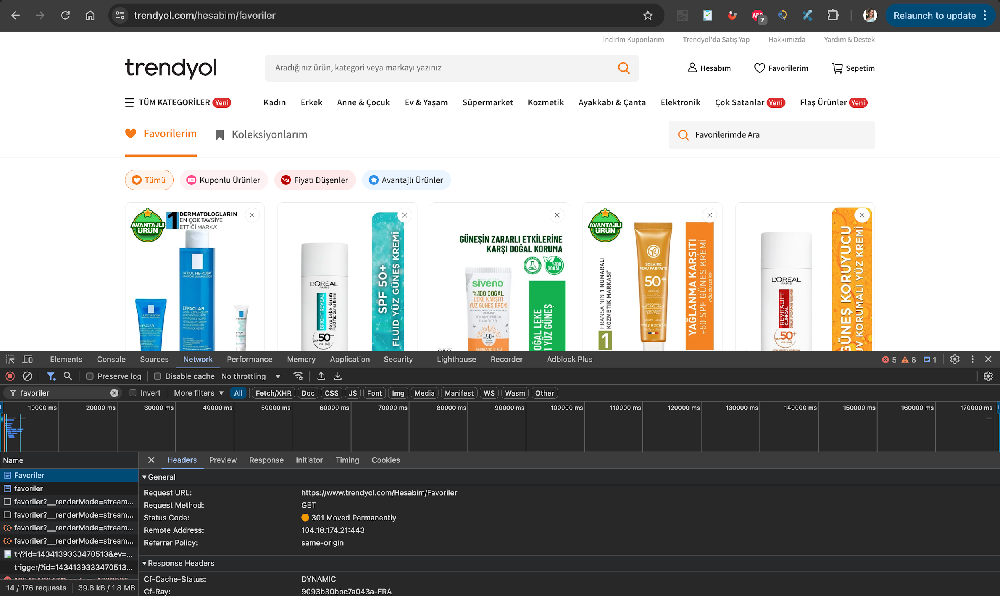

Task 03
Product Page Request
GET traffic event captured during product page interaction was inspected.
Request Summary
Analysis Note
Client behavior and response type were reviewed from network timeline.
Visual Evidence

Task 03
GET traffic event captured during product page interaction was inspected.
Client behavior and response type were reviewed from network timeline.
